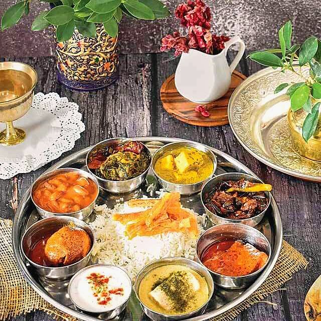

Kashmiri Rajma
small dark kidney beans simmered with fennel and dry ginger, without an onion in sight

Prep15 min
Cook75 min
Total90 min
Serves4
Difficultyeasy
Allergens: none of the common ones
Ingredients
Quantities for 4.
- 300g, soaked overnight and drained Rajmathe small dark beans of Bhaderwah if you can find them; they cook softer and sweeter
- 4 tbsp Mustard Oil
- 2 tbsp Kashmiri Chilli
- 2 tbsp Fennel Powder
- 1 tbsp Dry Ginger Powder
- 1/2 tsp Asafoetidause compounded-free hing to keep the dish gluten-free
- 1/2 tsp Turmeric
- 1, cracked Black Cardamom
- 3 Cloves
- 1 stick, 5cm Cinnamon
- 1 Bay Leaf
- 1/2 tsp, to finish Garam Masalaoptional
- 1.2 litres Water
- to taste Salt
Equipment
stovetop, pressure cooker
Before you start
- Soak the beans in plenty of cold water for at least 8 hours, or overnight. Unsoaked rajma will not soften however long you cook it.
- Do not add salt until the beans are completely tender — salted water toughens the skins and adds half an hour to the cooking.
- Soak the Kashmiri chilli powder in 4 tbsp warm water for 10 minutes; it goes in as a smooth paste and colours the gravy evenly.
Method
- Boil the drained beans in the water with the bay leaf, black cardamom, cloves and cinnamon.
- Simmer covered 60 minutes, or pressure-cook 20 minutes at full pressure, until a bean crushes to paste between finger and thumb.Under-done rajma tastes chalky and no amount of gravy hides it. Test three beans, not one.
- Heat the mustard oil in a second pan until it just smokes, then lower the flame.Smoke the mustard oil first; raw, it stays bitter right through the dish.
- Add the hing and let it foam for 10 seconds.
- Off the heat, stir in the chilli paste, turmeric, fennel powder and dry ginger, then return to low heat and fry for 2 minutes until the oil separates at the edges.
- Pour the tempering into the beans along with their cooking liquid and add salt to taste.
- Crush a ladleful of the beans against the side of the pot and stir them back in to thicken the gravy.This is what gives Kashmiri rajma its body — there is no cream and no tomato doing that job.
- Simmer uncovered 15 minutes, until the gravy is red-brown and coats the beans rather than pooling around them.
- Stir in the garam masala, rest 5 minutes and serve with plain rice.
Storage
Keeps 4 days refrigerated and is better on day two. Freezes well for a month; reheat with a splash of water to loosen the gravy.
Recipe v1.0.0, last updated 2026-07-31. Curated for Khaana and kept under version control.